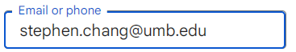

Logistics
Last updated: Thu, 28 Aug 2025 18:51:01 -0400
This page lists the websites and tools we’ll use in the course.
1 Web Browser
This website you are reading is the primary course website and syllabus.
It frequently uses math notation, especially for the HW assignments, which requires a JS math library (MathJax) to render. Thus, to view the course content, you will need a modern-ish web browser with JavaScript enabled.
If you can see the following, you’re all set: \mathcal{CS}\,{\large 420 / 620}
Note: Some versions of FireFox may not be able to render the HW assignments properly
2 Canvas
Here is the link to UMB’s Canvas page.
420-01 Canvas Page (DeBlois)
420-02 Canvas Page (Chang)
620-02 Canvas Page (Chang)
Canvas will only be used sporadically, e.g., to host lecture videos. Instead, students should check this course page that you are reading now for the most up to date and complete course information.
3 Discussion Board
We will primarily use Piazza to communicate outside of lecture.
All homework questions must be asked on Piazza. Please do not email the course staff with homework clarification questions.
Use a private post if you are unsure the question is suitable for the public. (The course staff reserves the right to change the visibility of all posts to public when it would benefit other students.)
4 Gradescope
Here is the Gradescope page for this course.
Homework (and sporadic quizzes) are submitted and graded via Gradescope.
Please do not email the course staff with homework submission files. They will be ignored and will not receive credit.
See also Homework Submission Policy.
5 Zoom
Office hours will sometimes use Zoom.
For security, links will be posted to Piazza and should not be shared outside of the class.
6 Google Apps
UMB’s Google Apps Suite will occasionally be used, e.g., to administer surveys.
To access these documents, start by entering your full umb.edu email into the Google sign-in box, e.g.:

(If a sign-in box does not appear, sign out of other accounts first, or open the link in an incognito window.)
7 JFLAP
JFLAP is an application for visually experimenting with FSMs and other models of computation.
It’s not officially required for the course, but you may find it useful (use version 7.x) and the course staff will occasionally use it present ideas in class.
8 LaTeX
LaTeX is typesetting software that is particularly useful for writing documents that include math (such as the homework assignments).
It’s not required but illegible homework will not be accepted so it is recommended that you install LateX and learn to use it.